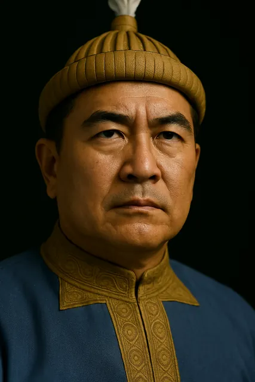

1215–1228
চাওলুং সুকাফা
1228–1268 · First Ahom king

Born around 1189 in Mong Mao, he left in 1215, crossed the Patkai hills and reached Namrup in December 1228, founding the Ahom kingdom that lasted until 1826. He built Charaideo in 1253.
Married daughters of the Moran chief Badaucha and the Barahi chief Thakumatha. Moved his base from 1236 (Mungklang) through Habung (1240) and Ligirigaon (1244) before Charaideo.
Record confidence: high.
1215–1228

1228

1228–1230

1228

1228

1228–1235

c. 1260s

c. 1230–1253

1235–1240

c. 1240–1250

1253

c. 1253–1268

c. 1255

1268 onwards